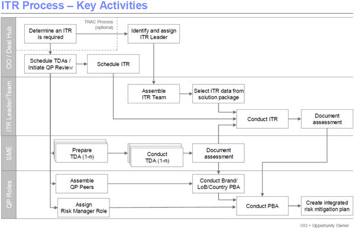

| Guideline: IBM Quality Practices ITR Overview |
 |
|
Relationships
| Related Elements |
|---|
Main Description
The chart below describes the overall Integrated Technical Review process.
 This guidebook is found on the IBM Global Services Worldwide Quality Assurance Information website. The ITR Guidebook should be used along with your brand's quality practices:
For additional information regarding IBM's quality practices, please see the attached presentation and speaker notes: |
Method Management
| Content Lead | tlseeve@us.ibm.com |
|---|---|
| Change Date | Fri Jun 21 22:08:33 IST 2013 |
| Revisions | November 2008 - baseline version |
© Copyright IBM Corp. 1987, 2016 All Rights Reserved |